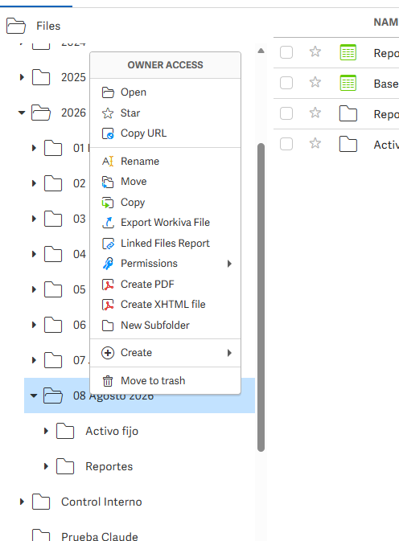
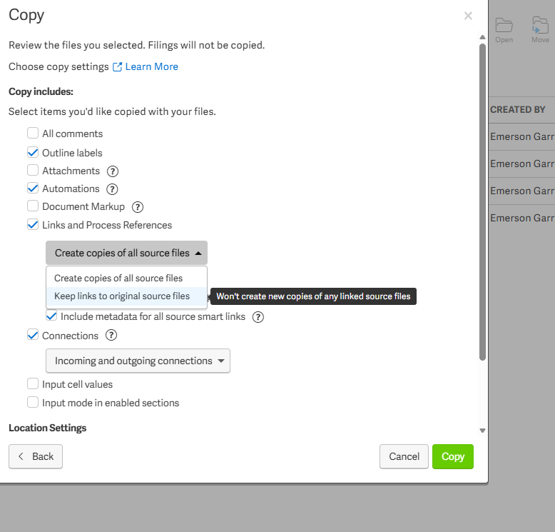
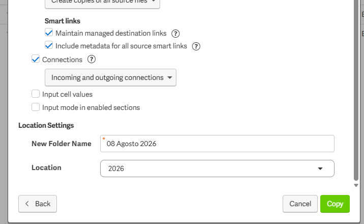

Clic derecho sobre la carpeta (o el archivo) en Files y elija Copy.
Revise la lista de archivos incluidos y presione Next. Los Filings nunca se copian.
En Copy includes, marque o desmarque las casillas según la lista de abajo.
Revise el desplegable de Links and Process References: es la única opción que puede arruinar la copia.
En Location Settings, escriba el New Folder Name del período nuevo y elija el Location: la carpeta del año, no la del mes anterior.
Presione Copy. La copia corre en segundo plano y llega un aviso por correo cuando termina.

Paso 1: clic derecho sobre la carpeta y elegir Copy. Ojo: Copy URL solo copia el vínculo y Move no deja duplicado.
Qué marcar en Copy includes
Entre paréntesis va el estado con que viene cada casilla por defecto.

Pasos 3 y 4: las casillas de Copy includes y el desplegable de links abierto con sus dos opciones.
All comments (desmarcada): déjela así. Los comentarios del período anterior ya no aplican.
Outline labels (marcada): desmárquela, o el período nuevo nace con secciones marcadas como revisadas.
Attachments (desmarcada): márquela solo si los adjuntos son parte fija del reporte y no evidencia del período.
Automations (marcada): déjela marcada.
Document Markup (desmarcada): déjela así. El marcado es evidencia de la revisión del período anterior.
Links and Process References (marcada): déjela marcada y revise su desplegable — ver más abajo.
Maintain managed destination links e Include metadata for all source smart links (ambas marcadas): déjelas marcadas; conservan los enlaces de destino y los nombres de los smart links.
Connections (marcada): déjela marcada, con “Incoming and outgoing connections”.
Input cell values (desmarcada): déjela así; los datos del período se cargan de cero.
Input mode in enabled sections (desmarcada): márquela si el equipo carga datos con Input Mode.
El desplegable que hay que mirar sí o sí
Links and Process References viene siempre en “Create copies of all source files”: duplica también los archivos fuente y enlaza la copia a esos duplicados. Eso es lo correcto cuando las fuentes son del período y avanzan con él.
Si las fuentes viven fuera de la carpeta y son únicas y permanentes, hay que cambiarlo a mano a “Keep links to original source files”: no crea copias de las fuentes y la copia sigue leyendo de las originales.
Elegir mal deja el período nuevo mostrando cifras del anterior, o llena el workspace de duplicados que nadie pidió.

Las dos casillas de Smart links van marcadas. Abajo, New Folder Name es obligatorio y Location define dónde queda la copia.
Después de copiar
Abra dos o tres archivos y verifique que sus enlaces apunten a donde usted decidió, no al período anterior.
Actualice las fechas dentro de documentos y planillas, y revise Document Health.
Confirme que la carpeta quedó en la ubicación correcta y con el nombre del período nuevo.
Mantenga la nomenclatura: prefijos (CHN) / (LC) y código de sociedad (E110, E200, E205…) sin alterar, o los scripts del Auditor dejan de reconocer los archivos.
Referencia: Workiva Support Center — “Copy a file or folder” (support.workiva.com/hc/en-us/articles/360035639992).